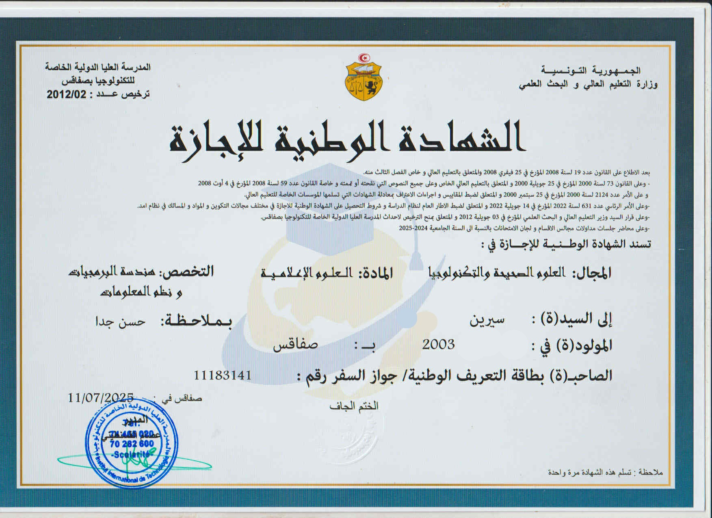
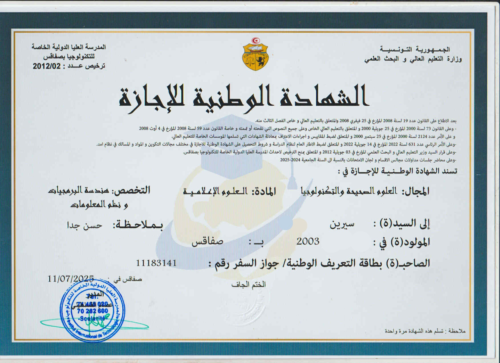

Licence en Informatique
2022 – 2025
Institut International de Technologie (IIT), Sfax
Cette formation m’a permis d’acquérir des bases solides en programmation, développement web, bases de données et conception de projets informatiques.
Formation, diplômes et certifications
2022 – 2025
Institut International de Technologie (IIT), Sfax
Cette formation m’a permis d’acquérir des bases solides en programmation, développement web, bases de données et conception de projets informatiques.
2022
Lycée Hbib Thamer, Sfax
Le baccalauréat en mathématiques m’a apporté une bonne capacité d’analyse, un raisonnement logique et une méthode de travail structurée.
2024
Formation sur les principes Agile et la méthode Scrum : rôles, sprints, backlog et organisation du travail en équipe.
2024
Formation sur les bases du marketing digital : visibilité en ligne, stratégie de contenu et communication numérique.